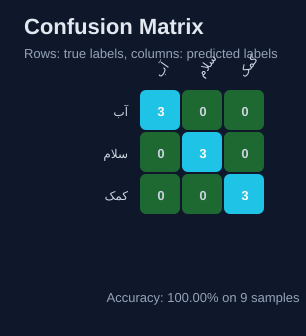
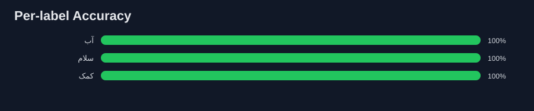

Persian Sign Language Model Report
Top-1 accuracy
100.00%
9 evaluated samples, 3 labels.
Confusion matrix

Per-label accuracy

Raw metrics
See metrics.json. Small, boring, easy to diff. My preferred kind of report.